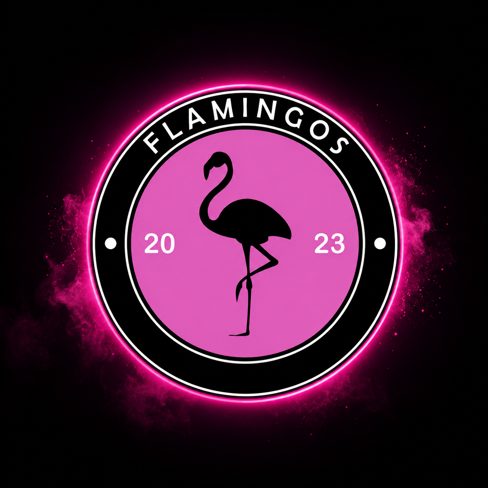
Růžový balet 🏆🦩
FC Flamingos je amatérský klub malého fotbalu z Liberce, který vznikl v roce 2023. Klub je známý svými růžovo-černými barvami, aktivitou na sociálních sítích a účastí v soutěži Sudety Cup.
Klub byl založen na podzimu roku 2023. Jeho zakladately byl současný kapitán a historicky nejlepší střelec Matyáš Františk Hájek a dnes již klubová legenda David Drobný. Začátky klubu byli poměrně krušné a výsledky nebyli zdaleka příznivé. Ovšem běhěm posledních dvou sezón se výrazně změnila kostra týmu, kdy přišla celá řada opor a dnes již klub patří k top týmům soutěžě Sudety Cup.
31. 5. 2026 od 14:00
📍 UMT Sportpark Liberec
FC Flamingos vs FK Fitmonci
FC Flamingos vs FC Real Chlastico
FC Flamingos vs FC Benfika B
FC Flamingos vs FK Fitmonci — dohrávka
7. 6. 2026 od 10:20
📍 UMT Sportpark Liberec
FC Flamingos vs San Miguel C.F.
FC Flamingos vs FC Braničtí Rytíři
FC Flamingos vs Sudeťáci
Vyvrcholení a velkolepé finále soutěže.
Přijď nás podpořit 20. 6. 2026 na hřiště Na Rozcestí — Vratislavice nad Nisou.
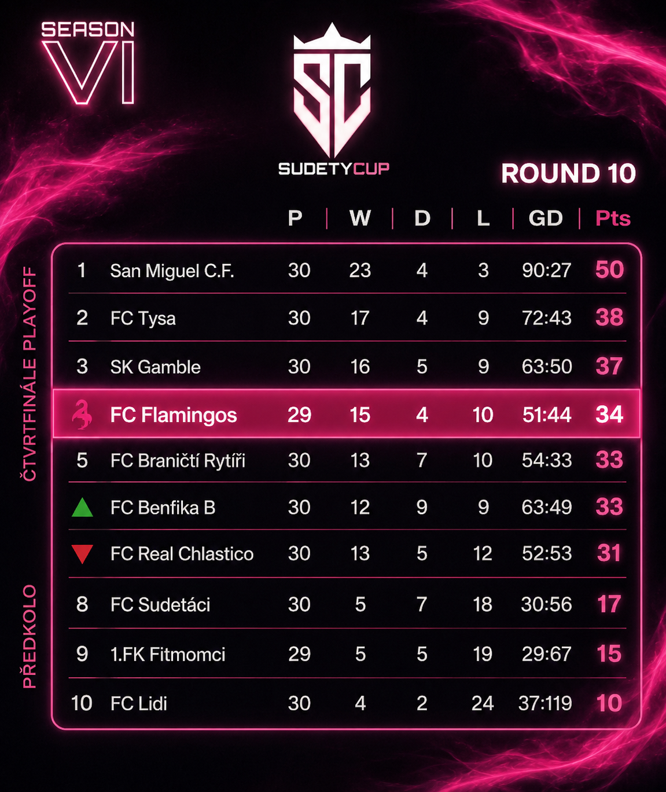
FC Flamingos vs FC Lidi 1:0
FC Flamingos vs SK Gamble 1:0
FC Flamingos vs FC Tysa 1:1
FC Flamingos vs FK Fitmonci 1:3
FC Flamingos vs FC Real Chlastico 3:0
FC Flamingos vs FC Benfika B 3:1
FC Flamingos vs San Miguel C.F. 0:4
FC Flamingos vs FC Braničtí Rytíři 1:3
FC Flamingos vs Sudeťáci 0:1
FC Flamingos vs FC Lidi 3:3
FC Flamingos vs SK Gamble 3:4
FC Flamingos vs FC Tysa 1:0
FC Flamingos vs FK Fitmonci Bude dohráno
FC Flamingos vs FC Real Chlastico 2:2
FC Flamingos vs FC Benfika B 1:0
FC Flamingos vs San Miguel C.F. 0:3
FC Flamingos vs FC Braničtí Rytíři 3:1
FC Flamingos vs Sudeťáci 2:0
FC Flamingos vs FC Lidi 3:1
FC Flamingos vs SK Gamble 2:4
FC Flamingos vs FC Tysa 1:3
FC Flamingos vs FK Fitmonci 2:1
FC Flamingos vs FC Real Chlastico 0:1
FC Flamingos vs FC Benfika B 1:5
FC Flamingos vs San Miguel C.F. 1:1
FC Flamingos vs FC Braničtí Rytíři 2:1
FC Flamingos vs Sudeťáci 3:0
FC Flamingos vs FC Lidi 6:0
FC Flamingos vs SK Gamble 1:0
FC Flamingos vs FC Tysa 3:1
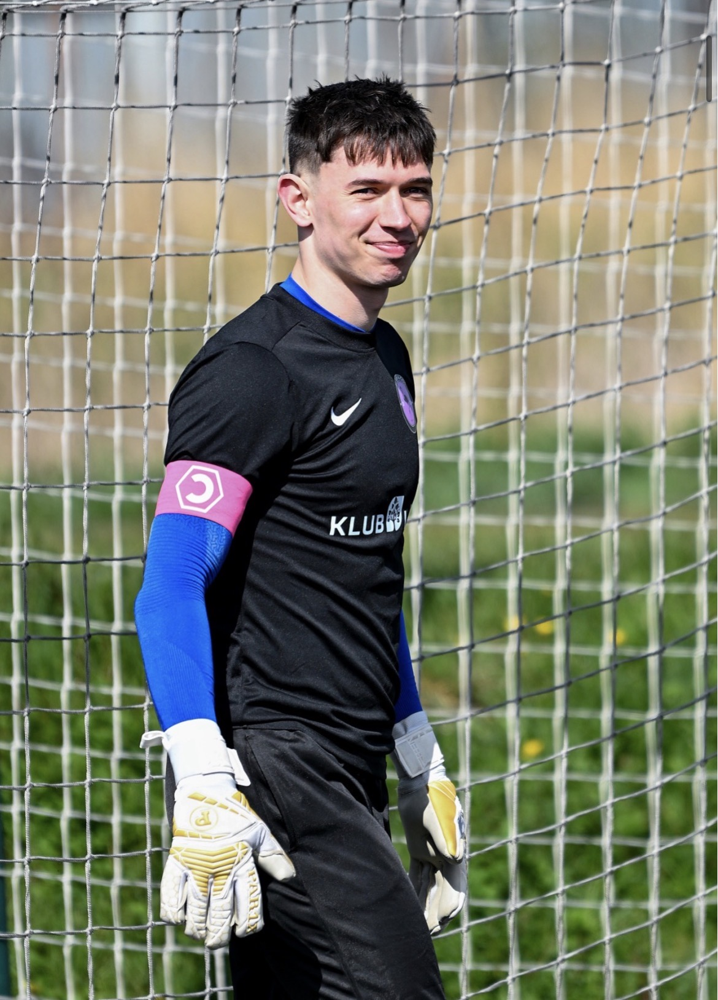
Pozice: Brankář
Číslo: 99
Věk: 23 let
Statistiky: 8 čistých kont, 1 gól, 9 asistencí
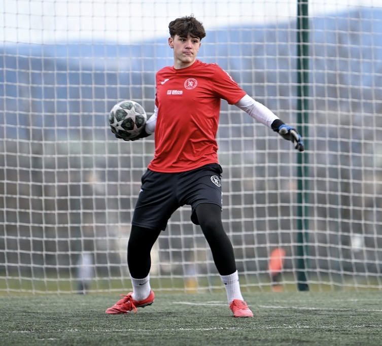
Pozice: Brankář
Číslo: 1
Věk: 17 let
Statistiky: 1 čisté konto
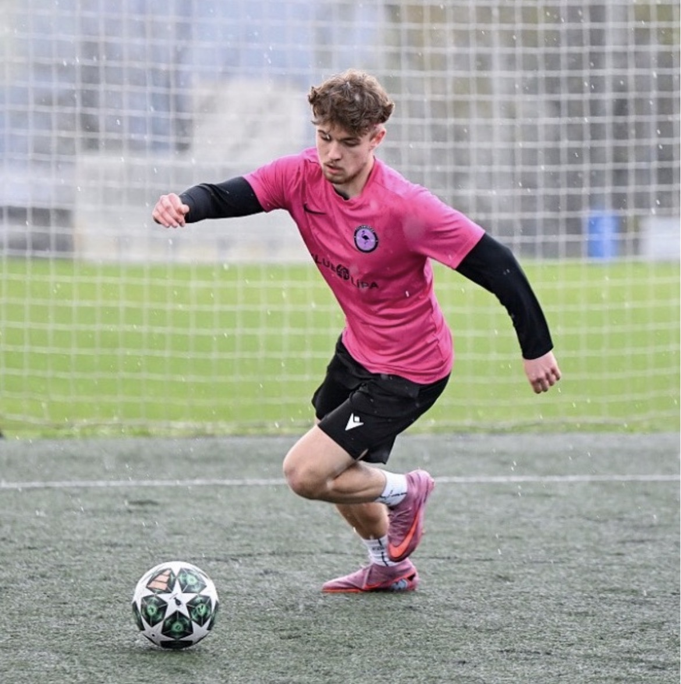
Pozice: Obránce
Číslo: 66
Věk: 19 let
Statistiky: 4 góly, 5 asistencí
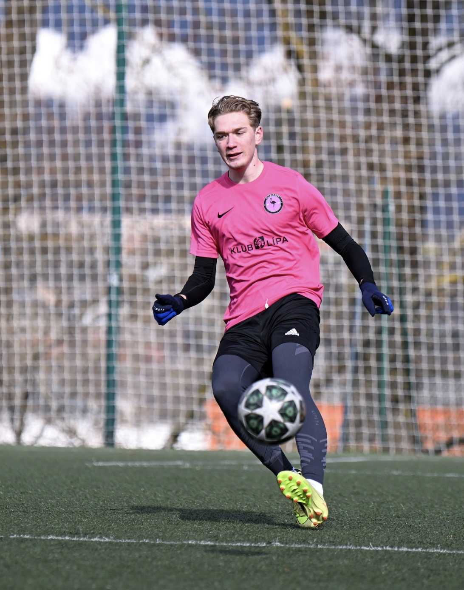
Pozice: Obránce
Číslo: 4
Věk: 20 let
Statistiky: -
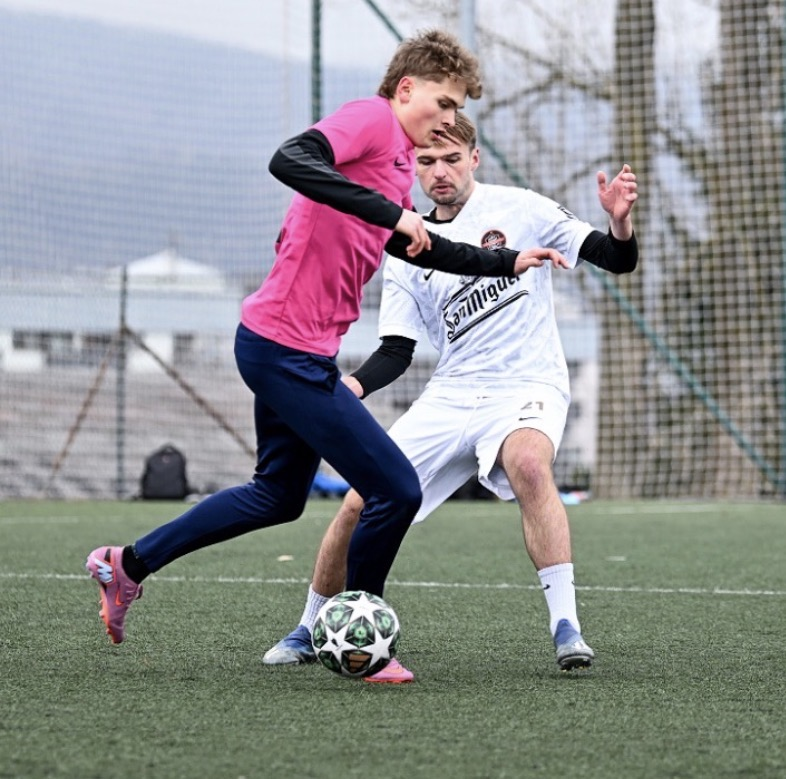
Pozice: Obránce
Číslo: 13
Věk: 19 let
Statistiky: 1 gól
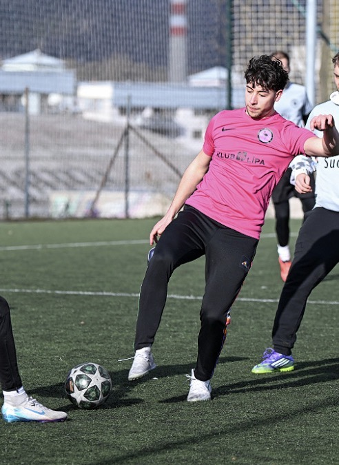
Pozice: Obránce
Číslo: 69
Věk: 21 let
Statistiky: 1 gól, 5 asistencí
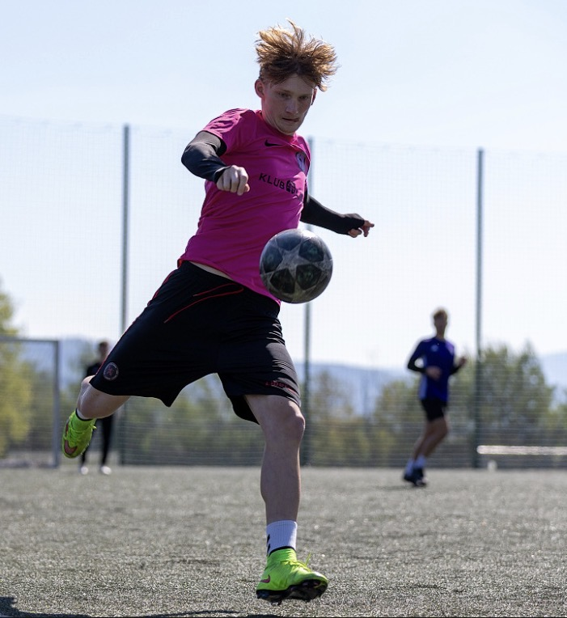
Pozice: Záložník
Číslo: 28
Věk: 19 let
Statistiky: 8 gólů, 4 asistence
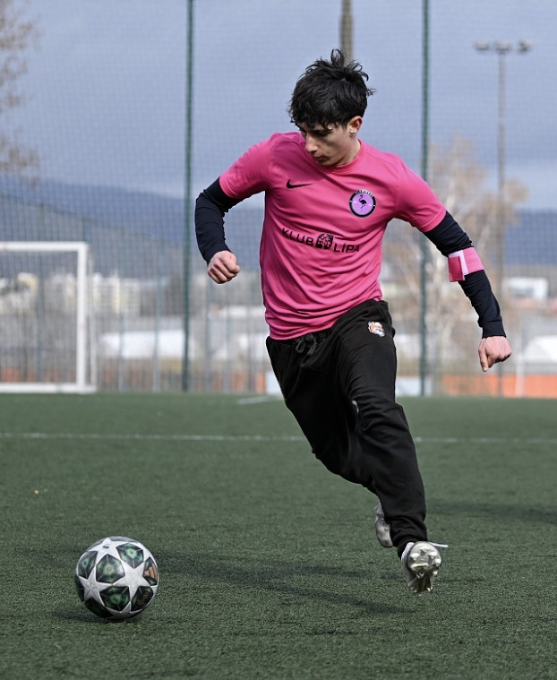
Pozice: Záložník
Číslo: 11
Věk: 19 let
Statistiky: 1 asistence
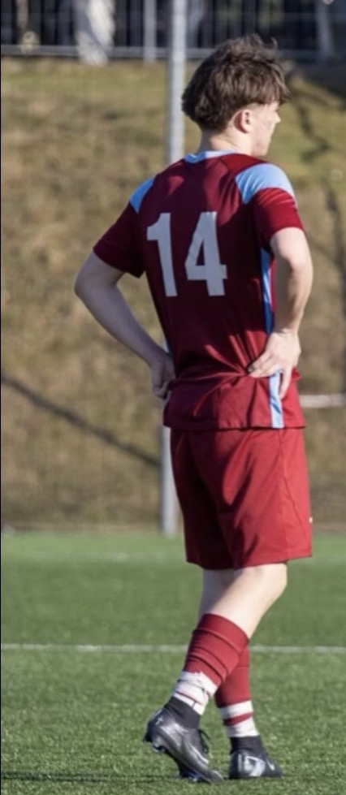
Pozice: Záložník
Číslo: 14
Věk: 17 let
Statistiky: 3 góly, 2 asistence
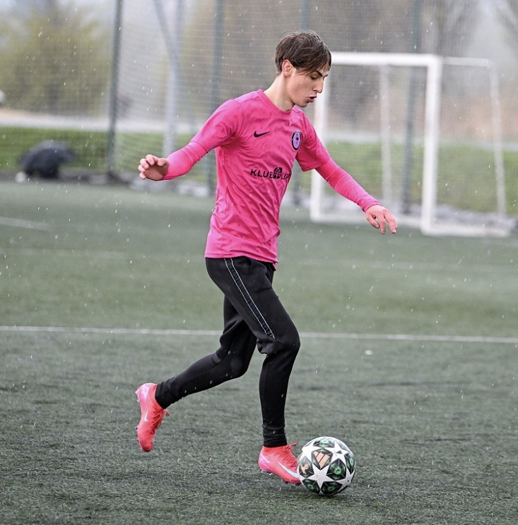
Pozice: Záložník
Číslo: 10
Věk: 20 let
Statistiky: 9 gólů, 10 asistencí
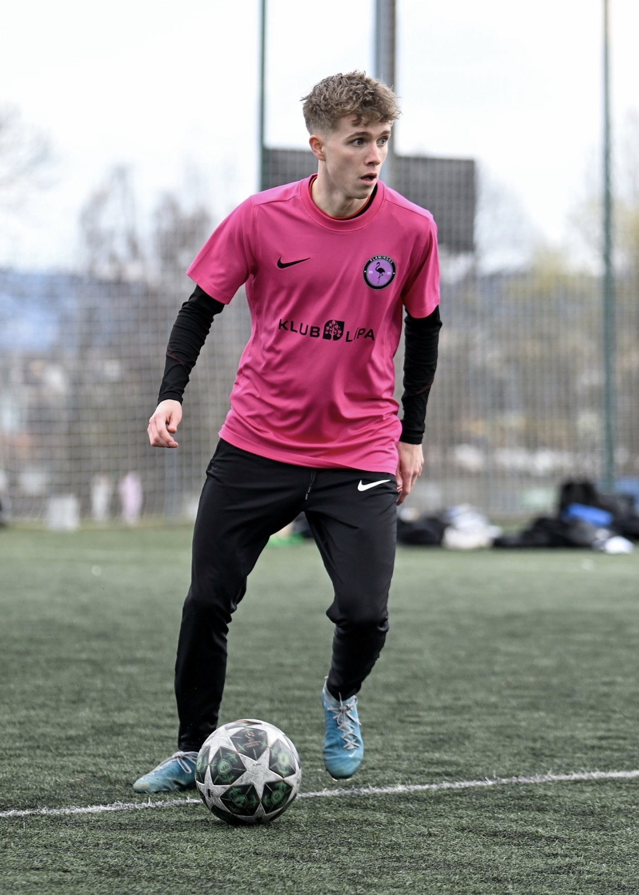
Pozice: Záložník
Číslo: 6
Věk: 19 let
Statistiky: 16 gólů, 5 asistencí
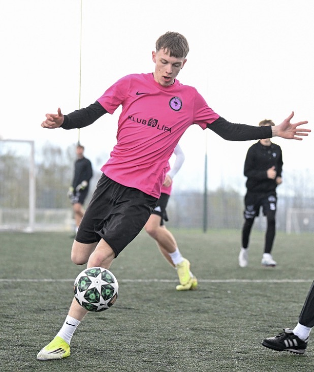
Pozice: Útočník
Číslo: 27
Věk: 19 let
Statistiky: 4 góly, 2 asistence
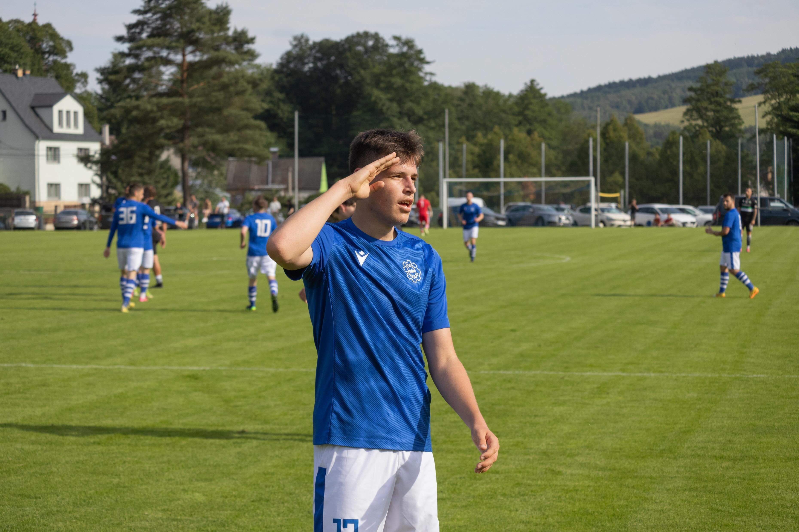
Pozice: Útočník
Číslo: 23
Věk: 19 let
Statistiky: 2 góly, 4 asistence
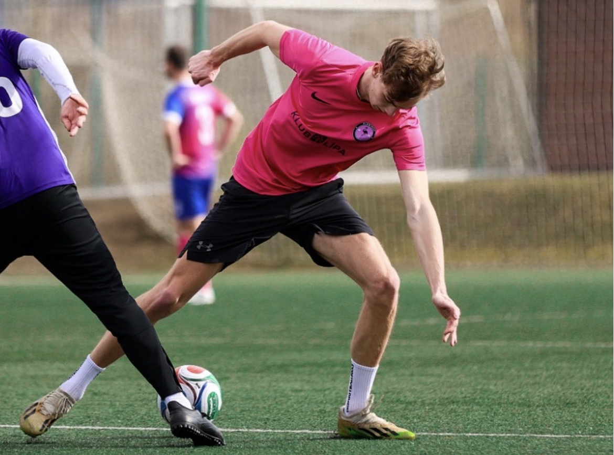
Pozice: Útočník
Číslo: 7
Věk: 20 let
Statistiky: 3 góly, 4 asistence
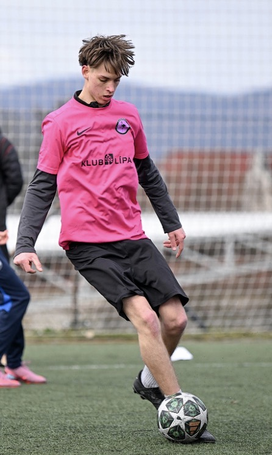
Pozice: Útočník
Číslo: 8
Věk: 21 let
Statistiky: -
Zde budou zveřejňovány nejnovější informace z prostředí FC Flamingos.
• oznámení klubu • výsledky zápasů • přestupy hráčů • nominace • nové dresy a merch • obsah ze zákulisí • důležité informace k Sudety Cupu
První klubové aktuality budou brzy doplněny.